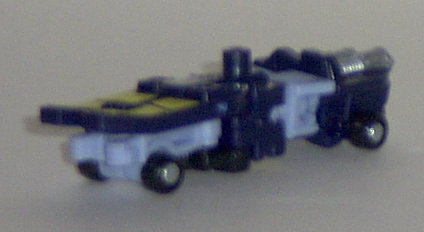
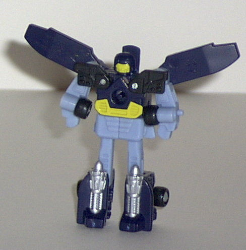
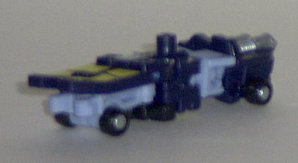
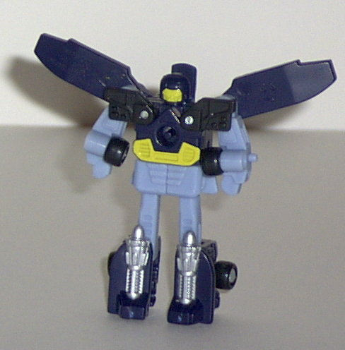
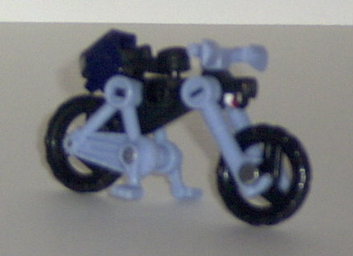
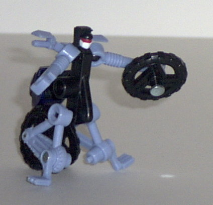
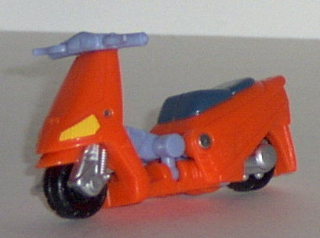
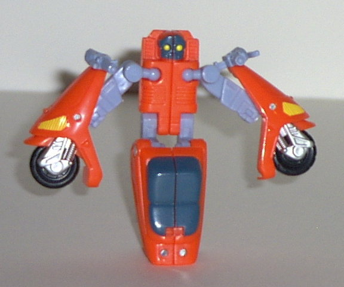
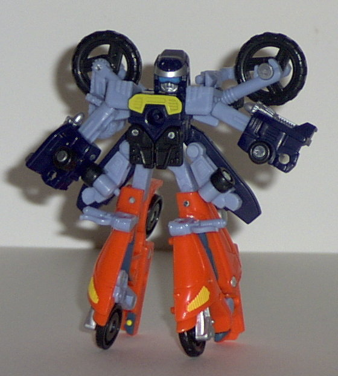

Grindor
Grindor
 
Difficulty of Transformation : Easy
Color Scheme : Dark navy blue, pale light blue, yellow, and some silver and black
Individual Rating : 6.5
Street
Action Team
Allegiance
: Minicon
Size
: Mini-Con (3-pack)
Team Gimmick
: Ability to combine
into a gestalt robot,
Perceptor
Overall Rating
: 4.3
Grindor


Difficulty of Transformation
: Easy
Color Scheme
: Dark navy blue, pale
light blue, yellow, and some silver and black
Individual Rating
: 6.5
Vehicle mode is a futuristic
jet-powered skateboard. NOT a 6-inch long sandwich. *rimshot amidst groans
from audience* Seriously, though, this thing only vaguely resembles a skateboard,
in that it's a long skinny thing with some friction pads on the front and
four wheels. Otherwise, this thing's too thick vertically to be a skateboard.
I mean, you basically just have the needed bulk on the robot mode on the
underside, not to mention the obvious fists there too. The jet engines
on the back are cool, even if they're not practical. (I mean, you'd fall
right off the thing if it starting jetting off like that.) What's interesting
is that Grindor is one of the very few Minicons to have a Powerlinx point-
and on the top of this mode, no less, which can allow other Minicons to
link on TOP of him, too. Nifty. The Mini-con symbol is etched on the top
center of this mode.
Robot mode looks pretty
good, and is definitely what this 'bot was designed around. Nice "wings"
on the back, and nice mold and paint detailing, too. However, the articulation
in this mode is extremely limited- only the shoulders and hips can move
in and out, not even back and forth, and that's it for motion. Definitely
limits playability quite a bit. Minicon port is on the center of his chest
in this mode, on the underside in skateboard mode.
Grindor's vehicle mode
is questionable, but his robot mode looks great. Too bad about the articulation,
though. My personal favorite of the Street Action Minicons (although that's
not saying much).
High
Wire


Difficulty of Transformation
: Very
Easy
Color Scheme
: Black, pale light
blue, and some dark navy blue, silver, white, red, and aqua blue
Individual Rating
: 0.9
"Vehicle" mode is a BMX
bike. Well, it's certainly never been done before, I can say that, so it's
definitely original, just like Grindor's "skateboard" mode. However, it
could have been done better. High Wire's face is very apparent on the underside
of the front headlight of the bike, even if you DON'T know what to look
for. Even more obvious that this is the Perceptor head on the back of the
"bike seat". I mean, it's right THERE. There's not an ATTEMPT to hide it.
So you've got not just one, but TWO faces clearly visible in vehicle mode.
Great.... Although the mold detailing is good, some more paint detailing
is clearly needed, as the only painted areas are the two robot faces. Some
silver or something in the molded "bike chains" or springs would have been
nice. The Minicon port is on the right side of the bike in this mode, and
is oddly positioned, in that it's hard to fit on many Powerlinx ports,
due to the handbars and pedals. Well, there goes THAT, too... The Minicon
symbol is etched on the left side of the bike.
Robot mode is beyond
horrible. He looks like the illegitimate sun of a Technic set, a Transformer,
and Cy-Kill, the '80s Go-Bot. His arms are nothing more than sticks, and
his left arm has an unsightly large wheel on not the outside, where it
would have looked a little better, but the inside, where it just looks
stupid. The Powerlinx port also sticks out unsightly from the right side,
and makes High Wire's body look very skinny and uneven (which it is). And
his legs take the cake. They're only VERY vaguely even recognizable as
legs. The "feet" are the pedals, with no discernable knees, and the entire
back part of the bike split in two attached to them. And the Perceptor
head/ bike seat just hangs there off the back, with no place to go. Just
terrible. Absolutely horrible. He has full-range shoulder and hip motion,
but he's too far gone for this to really matter. His handlebars complement
the mode a little, though...
High Wire is one of
the worst Transformers EVER. He has few redeeming features, in either mode.
And his robot mode is just... gah. GAH. Heck, I'm a completist, and I only
got him because he comes with Grindor.
Sureshock


Difficulty of Transformation
: Very
Easy
Color Scheme
: Orange, pale light
blue, dark blue-gray, and some yellow, black, and silver
Individual Rating
: 3.1
Vehicle mode is an electric
scooter (electric, hence, Sureshock. Get it?). This mode is pretty good,
and the orange doesn't seem really out place, especially since I've seen
electric scooters in weirder colors. Nice mold and paint detailing, with
the springs and wheel axles especially well done. The only thing "wrong"
with this mode is that the robot mode face is a bit visible under the bars
near the front of the scooter, but it's not THAT obvious. Sureshock's Minicon
insignia is on the his left side in this mode, and his Minicon port is
on the left center portion of the underside.
Sureshock's robot mode
is... not good. His legs are just one large mass made up of the scooter
seat, with no discernable feet or anything. From a side view especially,
they're unnecessarily bulky as well when compared to the rest of the body.
His arms are also rather thin and dorky-looking in comparison, with large
front scooter-halves hanging off of them unceremoniously. I'm also not
that fond of his face... looks too cute and "kiddy". Sureshock's articulation
is also severely limited; he can move his shoulders at two points, and
his hips back and forth (although is legs look goofy no matter what position
they're in). That's it.
Sureshock has an excellent
vehicle mode, but it all falls apart in his robot mode, with horrible proportions,
looks, and articulation.
Perceptor
(Gestalt Form)

Difficulty of Transformation
: Hard
Color Scheme
: Orange, pale light
blue, dark navy blue, and some dark blue-gray, yellow, black, and silver,
white, red, and aqua blue
Individual Rating
: 6.7
The tiniest gestalt ever, ladies and gentlemen! That in itself is kinda cool, as Perceptor himself is only the size of a small basic. He looks rather cool, too, with the wheels and most of the "extras" actually complementing his mode rather than detracting from it. His "goggles" on his face look pretty cool, too, and the "skirt" formed by Grindor's skateboard halves are rather creative. My main problem with Perceptor is his legs. They're very clearly scooter halves, and they're rather large on the bottom, with Sureshock's face halves being somewhat visible. They're also a bit long proportionally as well. Perceptor's articulation also suffers- he can only move his head in a very limited motion, and his arms at the shoulders. The fists are rather oddly placed on the arms as well, as the arms can only fold inward, so there goes the elbow articulation. This rather limits his playability, which is why I consider Perceptor a good display piece, but not a good, really fun toy. Although he DOES have a Minicon port on his chest, so that you can plug the whole shebang onto a larger Armada Transformer...
The Street Action Team is probably my least favorite Minicon team of them all as of this writing (1/03), and for good reason. Each of the individual members has at least one mode that's really bad (High Wire has two...), and Grindor is the only pretty decent one out of the bunch. Perceptor's kinda cool, as he's a tiny gestalt, but he's not very playable, as his articulation is very limited. Get if you're a completist, or you like uncoventional alt modes- otherwise, skip 'em.
Review by Beastbot